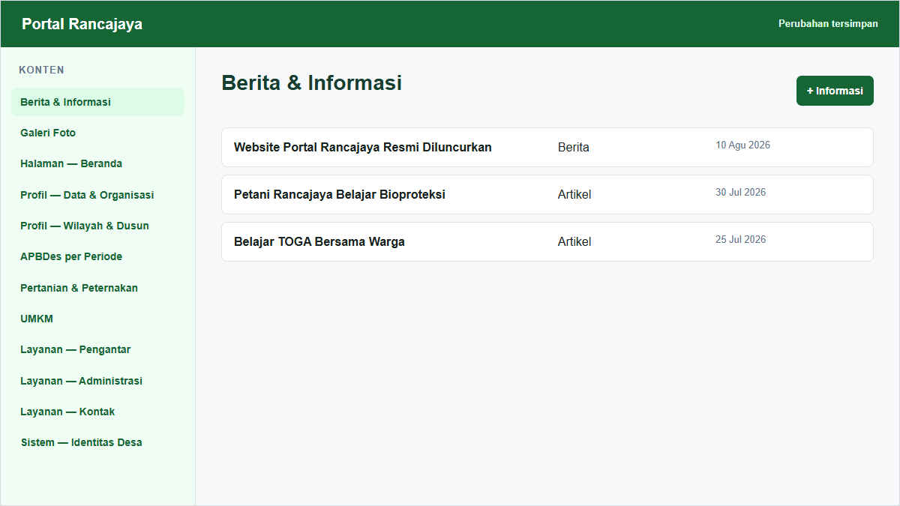
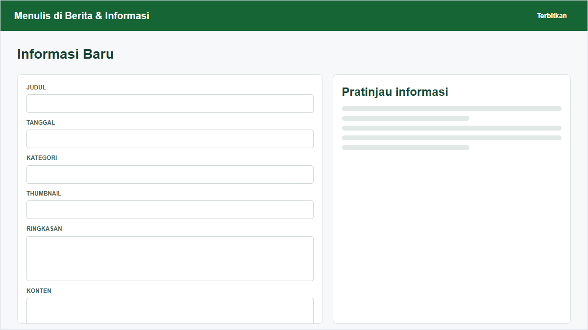
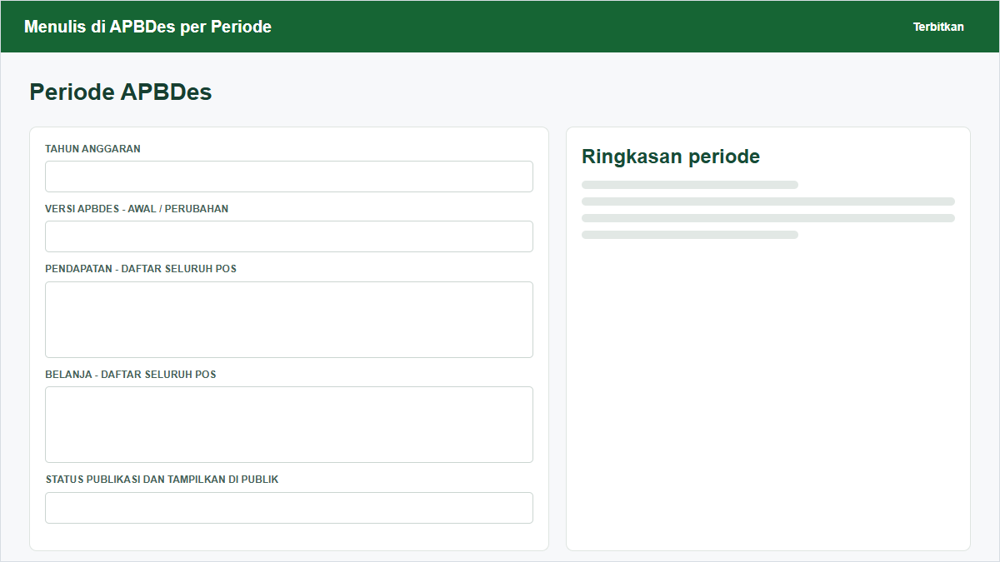
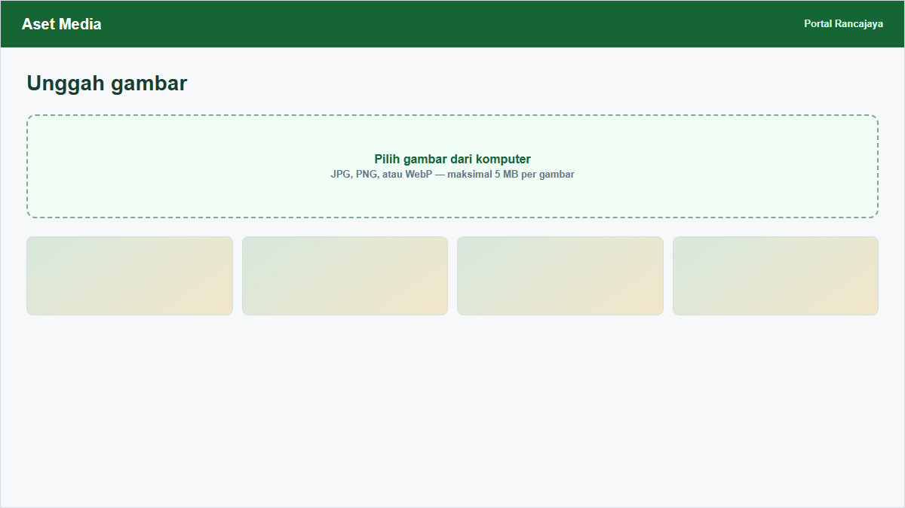

Panduan Operasional
Halaman Pengelolaan Website
Panduan langkah demi langkah untuk memperbarui informasi desa melalui halaman admin.
Ditujukan untuk: Warga dan Perangkat Desa yang Bertugas Mengelola Website Rancajaya
Bantuan teknis: Daffa via WhatsApp
Disusun oleh: KKN-T IPB 2026
Versi: Agustus 2026
Mengenal Halaman Pengelolaan
Halaman pengelolaan membantu perangkat desa memperbarui isi Portal Rancajaya melalui browser. Perubahan yang disimpan akan diteruskan ke website secara otomatis.
Bantuan teknis Daffa melalui WhatsApp: https://wa.me/6289663580475
- Masuk ke halaman admin.
- Pilih jenis informasi yang ingin diperbarui.
- Isi atau perbaiki data.
- Klik Terbitkan, lalu tunggu beberapa menit sampai website berubah.
| Dapat ditambah dan diubah | Hanya memperbarui data yang tersedia |
|---|---|
| Berita, APBDes, statistik potensi, kelompok tani, produksi pertanian, UMKM, layanan, kontak, dan galeri | Struktur organisasi, dusun, pengaturan umum, serta halaman website |

Masuk ke Halaman Admin
Buka alamat https://portalrancajaya.github.io/admin melalui Chrome, Edge, atau Firefox.
- Klik Masuk dengan GitHub.
- Masukkan akun GitHub yang telah diberi akses oleh pengembang.
- Jika diminta, setujui izin akses.
- Setelah berhasil, daftar menu pengelolaan akan tampil.
Berita dan Informasi
Menu Berita & Informasi dipakai untuk Berita, Agenda, Artikel, dan Pengumuman.
- Pilih Berita & Informasi.
- Klik + Informasi.
- Isi judul, tanggal, kategori, ringkasan, penulis, dan konten.
- Tambahkan thumbnail jika tersedia.
- Pilih Draf jika belum boleh tampil atau Terbit jika sudah siap, lalu klik Terbitkan.

- Tampilkan di Beranda digunakan untuk informasi yang perlu disorot.
- Tautan Artikel Lengkap dan Nama Media Sumber diisi jika tulisan lengkap berada di media lain.
- Judul halaman dibuat otomatis dari judul berita; pengelola tidak perlu menulis alamat halaman sendiri.
Profil Desa dan Dusun
Data identitas desa berada pada Pengaturan dan Halaman Website. Data tiga dusun berada pada menu Dusun.
- Buka Pengaturan > Pengaturan Umum untuk visi, misi, tujuan, sejarah, alamat, kontak, jam layanan, media sosial, peta, dan tahun APBDes aktif.
- Buka Halaman Website > Halaman Profil untuk sambutan, nama kepala desa, luas wilayah, penduduk, batas wilayah, dan demografi.
- Buka Dusun untuk memperbarui kepala dusun, penduduk, kepala keluarga, luas wilayah, dan deskripsi.
Struktur Organisasi
Menu Struktur Organisasi hanya untuk memperbarui posisi yang sudah disiapkan. Hubungan atasan menentukan garis susunan organisasi di halaman Profil.
- Pilih posisi yang akan diperbarui.
- Periksa nama dan jabatan.
- Pilih Atasan Langsung yang benar. Kepala Desa tidak memiliki atasan.
- Atur urutan agar susunan rapi.
- Isi deskripsi, tahun data, sumber, dan status validasi bila tersedia, lalu Terbitkan.
Transparansi APBDes
Setiap baris APBDes mewakili satu sumber Pendapatan atau satu pos Belanja untuk tahun dan versi tertentu.
- Pilih Transparansi APBDes lalu klik + Pos APBDes.
- Isi nama sumber atau pos.
- Pilih Pendapatan atau Belanja.
- Isi tahun serta versi Awal atau Perubahan.
- Isi jumlah rupiah dengan angka tanpa simbol Rp dan tanpa titik.
- Lengkapi sumber serta status validasi, kemudian Terbitkan.

Potensi dan Kelompok Tani
Informasi pertanian dikelola melalui tiga menu: Statistik Potensi, Kelompok Tani, dan Produksi Pertanian.
| Menu | Isi yang dikelola |
|---|---|
| Statistik Potensi | Angka ringkas pertanian, peternakan, dan sarana pertanian |
| Kelompok Tani | Nama kelompok, ketua, dusun, komoditas, luas, dan anggota |
| Produksi Pertanian | Komoditas, luas, produktivitas, produksi, dan catatan |
- Pilih menu yang sesuai.
- Tambah data baru atau buka data yang tersedia.
- Gunakan satuan yang konsisten.
- Cantumkan tahun dan sumber data, misalnya Programa BPP Patokbeusi.
- Terbitkan setelah isian selesai.
UMKM Desa
- Pilih UMKM lalu klik + UMKM.
- Isi nama UMKM, pemilik, kategori, produk utama, dusun, kontak, foto, dan deskripsi.
- Nomor kontak boleh diawali 08; website akan mengarahkannya ke WhatsApp jika formatnya sesuai.
- Pilih Tampilkan sebagai Unggulan hanya untuk UMKM yang perlu disorot.
- Terbitkan.
Layanan Surat dan Kontak
Administrasi Daring menampilkan jenis surat, persyaratan, dan tautan formulir. Kontak menampilkan nomor layanan yang dapat dipilih warga.
- Buka Administrasi Daring untuk menambah atau memperbarui nama layanan, kategori, deskripsi, tautan formulir, persyaratan, dan urutan.
- Gunakan tautan formulir resmi: https://forms.gle/jmu5QRToacBfipTi6.
- Buka Kontak untuk memperbarui nama, jenis, telepon, alamat, deskripsi, dan urutan.
- Ubah menjadi Draf atau matikan Tampilkan di Publik jika layanan sementara tidak boleh terlihat.
Galeri Foto
- Pilih Galeri Foto lalu klik + Foto Galeri.
- Isi judul, tanggal, kategori, foto, teks alternatif, dan deskripsi.
- Teks alternatif menjelaskan isi foto secara singkat, misalnya Warga mengikuti lokakarya di Balai Desa Rancajaya.
- Terbitkan.

- Gunakan JPG, PNG, atau WebP.
- Usahakan ukuran foto tidak lebih dari 5 MB; saat ini batas ukuran belum dipaksakan oleh halaman admin.
- Gunakan nama berkas yang jelas dan tanpa karakter aneh.
- Pilih foto terang, tidak buram, dan tidak memperlihatkan dokumen pribadi warga.
Beranda dan Pengaturan Umum
Halaman Website berisi teks dan gambar khusus untuk Beranda, Profil, Potensi, dan Layanan. Pengaturan berisi identitas yang dipakai di banyak halaman.
- Buka Halaman Website > Halaman Beranda untuk judul utama, subjudul, gambar, sorotan, dan statistik.
- Buka Halaman Potensi untuk narasi pertanian, Gapoktan, peternakan domba, dan galeri peternakan.
- Buka Halaman Layanan untuk judul serta subjudul halaman layanan.
- Buka Pengaturan Umum untuk alamat kantor, kontak, media sosial, peta, dan tahun APBDes aktif.
Menyimpan dan Mengatasi Masalah
Pilihan penayangan
| Pilihan | Hasil |
|---|---|
| Draf | Informasi disimpan tetapi tidak ditampilkan di website |
| Terbit | Informasi dapat tampil setelah website selesai diperbarui |
| Tampilkan di Publik dimatikan | Informasi disembunyikan tanpa menghapus berkasnya |
Masalah umum
- Perubahan belum terlihat: tunggu beberapa menit lalu muat ulang halaman.
- Tidak bisa masuk: pastikan akun GitHub memiliki akses tulis ke repository Portal Rancajaya.
- Foto tidak muncul: unggah ulang JPG, PNG, atau WebP dengan nama berkas sederhana.
- Website gagal diperbarui: catat informasi terakhir yang diubah dan hubungi PIC teknis.
- Salah isi: buka kembali data, perbaiki, lalu Terbitkan ulang.